Modern JavaScript
ES2022+ through the Boa engine. React 18, Vue 3 and Preact apps render, timers included, on a virtual clock that never waits for real time.
Open source · Rust · GPL-3.0
A modern successor to wkhtmltopdf. bdhtml2pdf runs your page's JavaScript, styles it with Firefox's CSS engine and writes a PDF with real, searchable text. No Chromium, no WebKit, no Qt.
$ bdhtml2pdf invoice.html invoice.pdf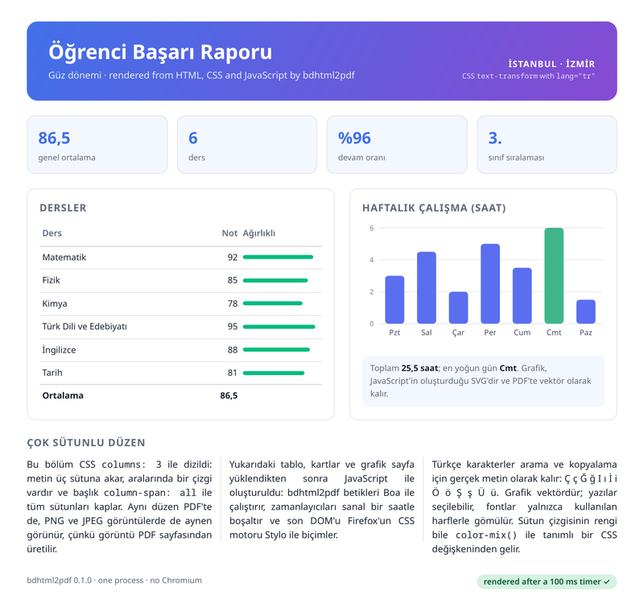
Release 1.0.0. Every number on this page is measured. It still builds against patched checkouts of fulgur and Blitz until our upstream pull requests are merged. See the known issues.
Quick start
Install the bdhtml2pdf binary first. The Python, Node.js, Ruby and PHP packages are small wrappers with no native code: they run the binary, or talk to bdhtml2pdf serve. They are not on PyPI, npm, RubyGems or Packagist yet, so they install from the repository.
The options follow wkhtmltopdf; the output extension picks the format.
bdhtml2pdf invoice.html invoice.pdf
bdhtml2pdf --page-size A5 --pdf-a 2b invoice.html invoice.pdf
bdhtml2pdf --width 1280 page.html page.pngPython 3.9 or newer.
pip install "git+https://github.com/bahadirdogru/bdhtml2pdf#subdirectory=bindings/python"import bdhtml2pdf
pdf = bdhtml2pdf.convert("<h1>Merhaba</h1>", page_size="A4", pdf_a="2b")
with open("output.pdf", "wb") as f:
f.write(pdf)Node.js 18 or newer; TypeScript types included.
git clone https://github.com/bahadirdogru/bdhtml2pdf
npm install ./bdhtml2pdf/bindings/nodeconst { convert } = require('bdhtml2pdf');
const pdf = await convert('<h1>Merhaba</h1>', { pageSize: 'A4', pdfA: '2b' });
require('node:fs').writeFileSync('output.pdf', pdf);Ruby 2.7 or newer. In the Gemfile:
gem "bdhtml2pdf", git: "https://github.com/bahadirdogru/bdhtml2pdf",
glob: "bindings/ruby/*.gemspec"require "bdhtml2pdf"
pdf = Bdhtml2pdf.convert("<h1>Merhaba</h1>", page_size: "A4", pdf_a: "2b")
File.binwrite("output.pdf", pdf)PHP 8.1 or newer, no extension. With a Composer path repository:
git clone https://github.com/bahadirdogru/bdhtml2pdf
composer config repositories.bdhtml2pdf path bdhtml2pdf/bindings/php
composer require bahadirdogru/bdhtml2pdf:@devuse Bdhtml2pdf\Converter;
$pdf = (new Converter())->convert('<h1>Merhaba</h1>', ['page_size' => 'A4', 'pdf_a' => '2b']);
file_put_contents('output.pdf', $pdf);One server, many conversions; each page runs in its own child process, so a failing page fails alone. Every binding has a Client for it.
bdhtml2pdf serve # http://127.0.0.1:7368, one job per CPU
curl --data-binary @invoice.html \
'http://127.0.0.1:7368/pdf?page-size=A4&pdf-a=2b' -o invoice.pdfOptions are the command-line flags in snake_case (camelCase in Node.js and PHP too). Bindings and server reference
Features
Templates for invoices, reports, certificates and tickets are HTML, and more and more of that HTML is built by JavaScript. bdhtml2pdf renders it as it is.
ES2022+ through the Boa engine. React 18, Vue 3 and Preact apps render, timers included, on a virtual clock that never waits for real time.
Stylo, the cascade Firefox ships, not a hand-written subset: nesting, :has(), @layer, grid, flex, multi-column, oklch(), color-mix().
Text stays text, so it can be searched and copied. Fonts are subset. @page, margin boxes, running headers, page counters and repeated table headers work.
One 29 MB binary and one process. About 30–70 MB of memory and 0.07 s for a typical page on an i7-12800H; a React app with timers takes 0.15 s, a 24-page invoice 0.16 s.
No network access. Files load only from the input's directory. Endless loops, timer floods and memory bombs are stopped by built-in limits.
PNG and JPEG with --width, --height, --zoom and --quality, like wkhtmltoimage. They come from the same layout as the PDF.
--pdf-a 2b writes PDF/A-2b for long-term archives; 1b, 2u, 2a, 3b, 3u and 3a work too. --pdf-ua writes accessible PDF/UA-1: content tagged in reading order for screen readers, decoration and page headers marked as artifacts. Both refuse a page without a language or alt text, saying what is missing.
Two runs on the same HTML give byte-identical PDFs, because scripts run on a virtual clock. With SOURCE_DATE_EPOCH set, PDF/A files are identical too.
Linux on x86_64 and aarch64 (glibc 2.35 or newer), macOS on Apple silicon and Windows on x86_64. Nothing else to install: no Python, no Qt, no browser.
Use cases
bdhtml2pdf is made for documents that a program writes and a person keeps: printed, signed, archived or sent on.
Keep the HTML templates and the one-command workflow, and get ES2015+, flex, grid and @page in return. One 29 MB binary replaces wkhtmltopdf and its patched Qt.
Turkish text that searches and copies correctly, table headers repeated over hundreds of rows, page numbers in margin boxes, and PDF/A-2b for the archive.
Pages that React, Vue or Preact build, with charts drawn as SVG. Timers and promises settle on a virtual clock before the page is printed, so nothing waits for real time.
When users supply the HTML, the network stays off, files load only from the input’s directory and limits stop endless loops and memory bombs. At 30–50 MB per conversion, many run side by side.
Samples
Every document below was produced by bdhtml2pdf from a single HTML file; the previews show the first page of each PDF. Open a PDF and select its text, or read the HTML source.
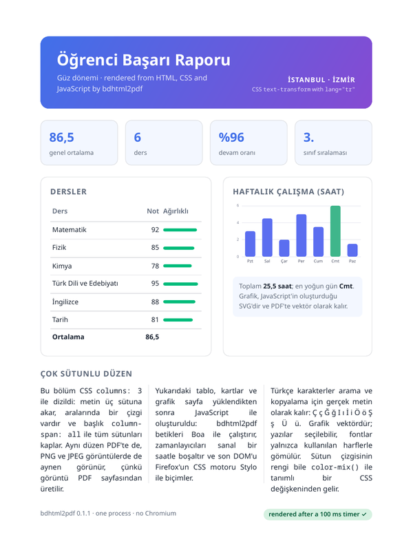
KPI cards, a table and an SVG chart, all built by JavaScript. Grid layout, color-mix(), three columns of text.
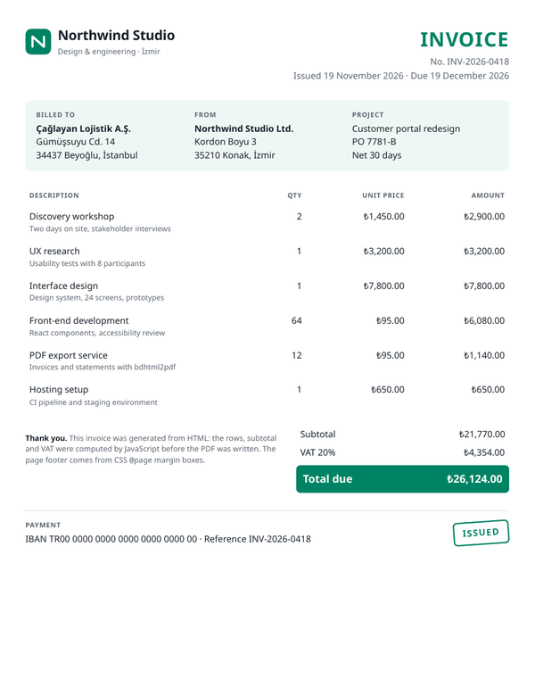
Line items and VAT computed by a script, Turkish lira formatting, and a footer with “Page 1 of 1” from @page margin boxes.
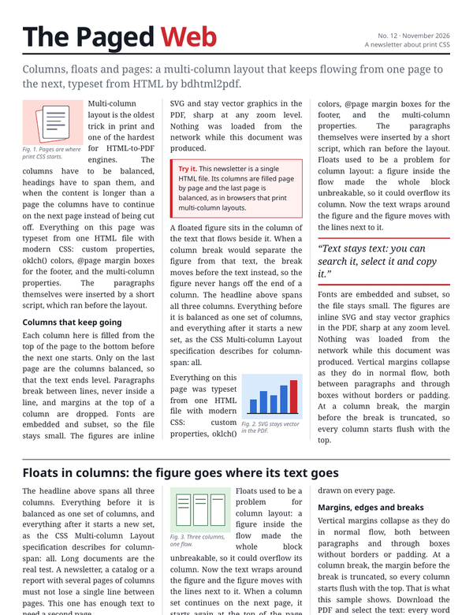
Three columns that flow around floated figures, a headline spanning the columns, and columns that continue on page two.
QR codes from qrcode.js, the library e-invoice templates use. With no canvas it draws them as tables, which print as vector squares and scan.
Landscape A4 in Turkish, an SVG seal with text on a path, and text-transform under lang="tr": ılgın → Ilgın.
How it works
Every hard part already existed as a maintained Rust library. bdhtml2pdf connects them into one pipeline with one DOM and one style engine, and sends every change it needs upstream as a pull request.
@page, margin boxes, counters, table and column breaks| Library | Role |
|---|---|
| Blitz | DOM, style and layout glue, and the JavaScript binding |
| Stylo | CSS cascade, the engine Firefox uses |
| Taffy · Parley | block, flex and grid layout · text shaping and line breaking |
| Boa | JavaScript engine, written in Rust |
| fulgur | paged media and pagination; ported by us to current Blitz |
| Krilla · hayro | PDF writer · PDF rasterizer for image output |
Results
The same pages went through five engines with default settings on one machine with the same system packages and fonts (i7-12800H, Fedora 45, median of 10 runs, 24 November 2026). Results are read back from the PDFs; nothing is judged by eye.
| Check | bdhtml2pdf 1.0.0 | sghtmltopdf 0.8.0 | wkhtmltopdf 0.12.6 | Chromium 158 | WeasyPrint 70.0 |
|---|---|---|---|---|---|
| Modern CSS (11) | 10 | 8 | 1 | 11 | 8 |
| Modern JavaScript (19) | 18 | 0, no JS | 0, no ES2015+ | 18–19 | 0, no JS |
| React, Vue, Preact apps | 3/3 | 0/3 | 0/3 | 3/3 | 0/3 |
| HTML parsing (7) | 7 | 7 | 6 | 7 | 7 |
| Turkish (15) | 12 | 8 | 8 | 14 | 11 |
| Fonts (8) | 8 | 7 | 6 | 8 | 7 |
| One-page document | 0.07 s | 0.03 s | 0.25 s | 0.35 s | 0.47 s |
| React app with timers | 0.15 s | — | — | 0.35 s | — |
| 24-page invoice | 0.16 s | 0.08 s | 0.37 s | 0.69 s | 2.15 s |
bdhtml2pdf is the only engine besides Chromium that runs modern JavaScript apps and modern CSS, with about a seventh of its memory. sghtmltopdf and WeasyPrint do not support JavaScript. On static pages and on long tables, bdhtml2pdf is faster than wkhtmltopdf, Chromium and WeasyPrint; sghtmltopdf is faster still, without JavaScript. Chromium's 18–19: its requestAnimationFrame check passes in some runs and not in others. Full results and method.
| Feature | bdhtml2pdf 1.0 | fulgur 0.41 | sghtmltopdf 0.8 | wkhtmltopdf 0.12.6 | Chromium 156 | WeasyPrint 70 |
|---|---|---|---|---|---|---|
| Written in Rust | ✅ | ✅ | ✅ | ❌ C++, Qt | ❌ C++ | ❌ Python |
| No headless browser | ✅ | ✅ | ✅ | ❌ QtWebKit | ❌ | ✅ |
| Modern JavaScript (ES2015+, React, Vue) | ✅ | ❌ | ❌ | ❌ ES5 only | ✅ | ❌ |
| Modern CSS checks (of 11) | 10 | not measured | 8 | 1 | 11 | 8 |
@page margin boxes, page counters | ✅ | ✅ | ✅ | ❌ header/footer flags | ✅ | ✅ |
| No network by default | ✅ | ✅ | ✅ | ❌ | ❌ | ❌ |
| PDF/A for archiving | ✅ 1b to 3a | ❌ | ❌ | ❌ | ❌ | ✅ 1b to 4f |
| PDF/X for print | △ planned | ❌ | ❌ | ❌ | ❌ | ✅ X-1a to X-5g |
| Tagged PDF, PDF/UA | ✅ PDF/UA-1 | ✅ PDF/UA-1 | △ tagged | ❌ | △ tagged | ✅ PDF/UA-1, UA-2 |
| Bindings, server | Python, Node, Ruby, PHP, HTTP server | Python, Ruby, Node | Ruby, HTTP server | third-party wrappers | Puppeteer, Playwright | Python library |
| License | GPL-3.0 | MIT / Apache-2.0 | MIT | LGPL-3.0 | BSD-3-Clause | BSD-3-Clause |
✅ yes, ❌ no, △ in part. Feature rows come from each project's own documentation (fulgur's README, sghtmltopdf's CLI reference, weasyprint --help); the CSS row is our measurement above. WeasyPrint is ahead on PDF standards: for static HTML that has to be PDF/X, PDF/UA-2 or PDF/A-4 today, it is the better choice. fulgur is the paged media engine bdhtml2pdf builds on; bdhtml2pdf adds JavaScript, image output and PDF/A to it.
Security
HTML-to-PDF services often render documents that users control. The security suite tries to read local files, escape the input directory, reach internal services and exhaust the machine, with every engine on its default settings.
/etc/passwd through iframes, objects, redirects or fetch()WeasyPrint 7/11 · wkhtmltopdf 9/11 · headless Chromium 1/11
while (true) {} ends after a loop limitWeasyPrint 4/5, no JavaScript · wkhtmltopdf 3/5 · headless Chromium 3/5
Languages
The whole alphabet is tested in system fonts, web fonts, bold and italic, and it survives text extraction from the PDF. Case mapping follows the language of the text, the kind of detail engines get wrong.
Ç ç Ğ ğ I ı İ i Ö ö Ş ş Ü ü
/* lang="tr" */
text-transform: uppercase;
istanbul → İSTANBUL
text-transform: capitalize;
izmir → İzmir
text-transform: lowercase;
IŞIK → ışıkRight-to-left Arabic and Persian with Latin text inside, Japanese, Chinese and Korean, Cyrillic. Each sample is one HTML file; the PDFs embed and subset the fonts, so they look the same everywhere.
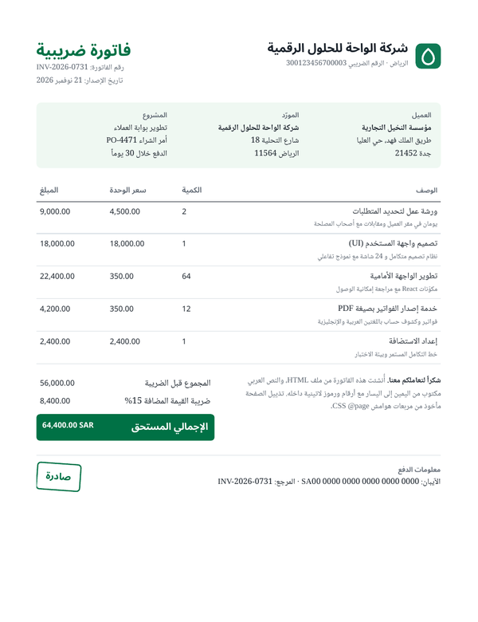
A tax invoice in Noto Naskh Arabic, right to left, with Latin codes and figures inside the Arabic text and a right-to-left page footer.
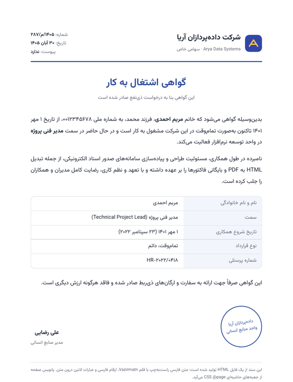
An employment certificate in Vazirmatn with Persian digits, a Solar Hijri date and a seal. Contextual letter forms and the zero-width non-joiner shape as in a browser.
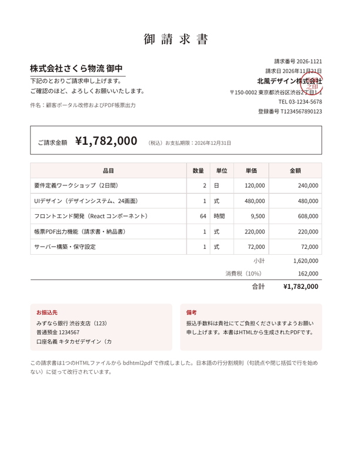
A 請求書 in Noto Sans and Serif CJK JP. Lines break by Japanese rules: none starts with 。 or 」.
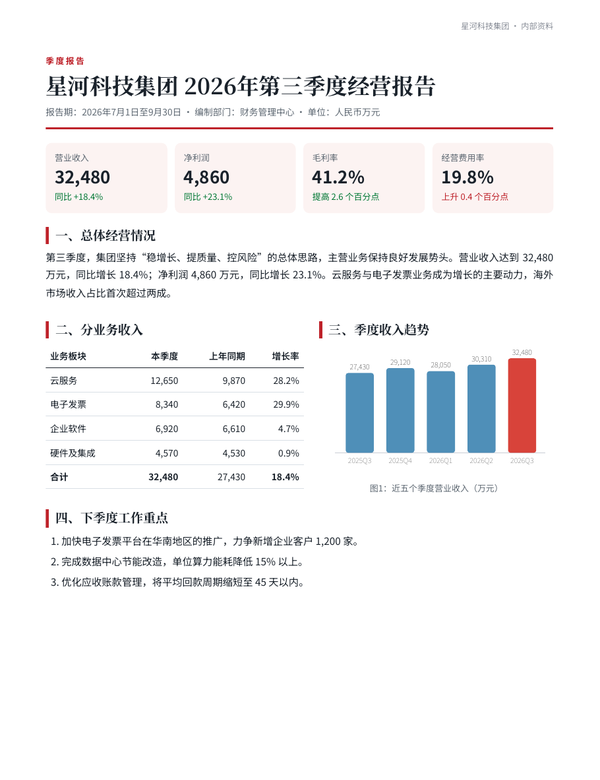
A quarterly report in Simplified Chinese with KPI cards, a table and an SVG bar chart built by JavaScript.
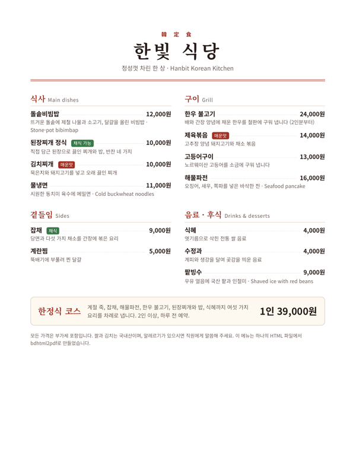
A restaurant menu in Noto Sans and Serif CJK KR: Hangul with Hanja and English names, dotted leaders, and word-break: keep-all, so lines break between words as Korean expects.
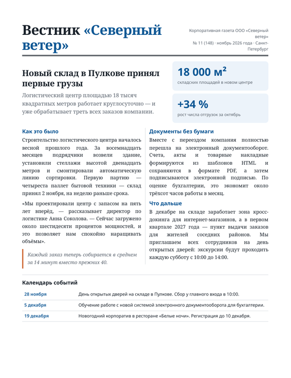
A newsletter in two balanced, justified columns of Cyrillic text in Noto Serif, with «ёлочки» quotes and dashes.
Side by side
The same HTML file, printed to PDF by headless Chromium (--print-to-pdf, Chromium 157.0.8103.78) and by bdhtml2pdf, both with their defaults. The first page of each PDF is rasterized at the same resolution; nothing is retouched. Small differences remain, such as where a line breaks at a hyphen.
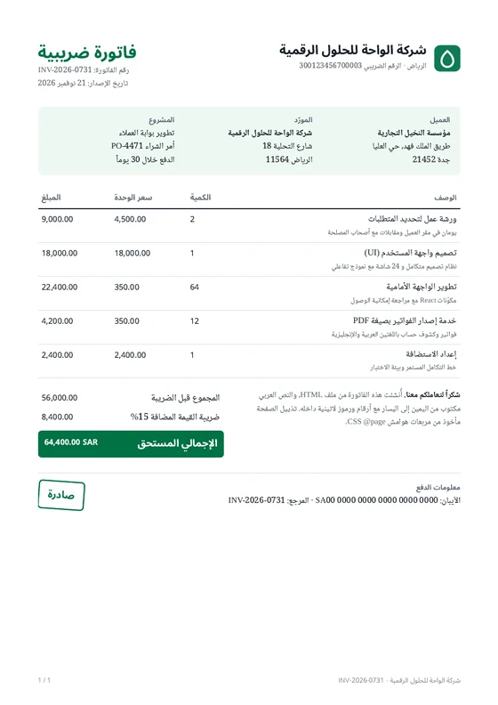
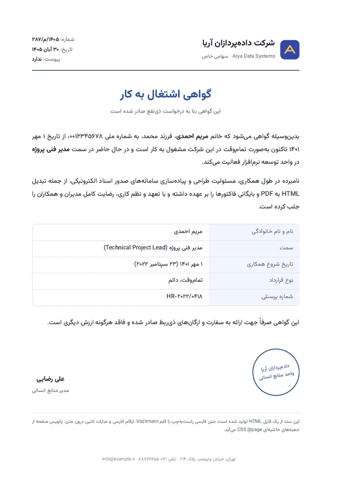
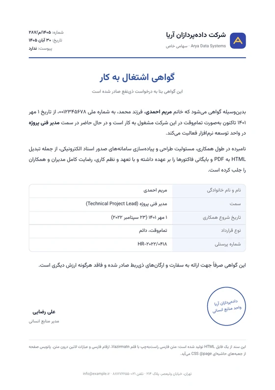
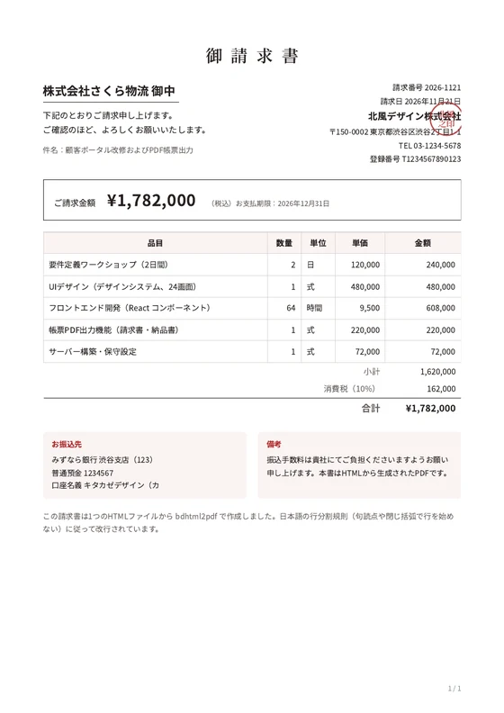
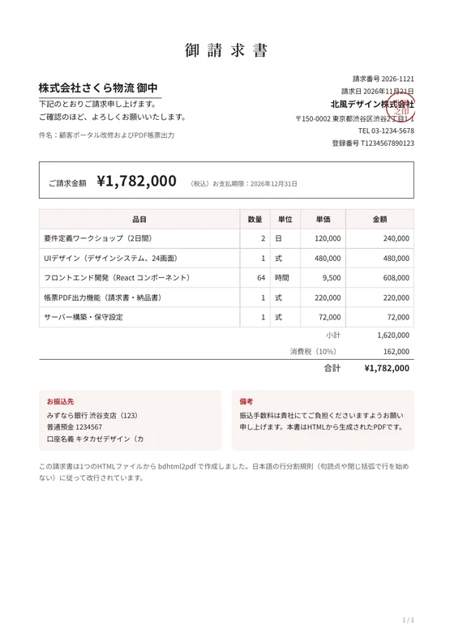
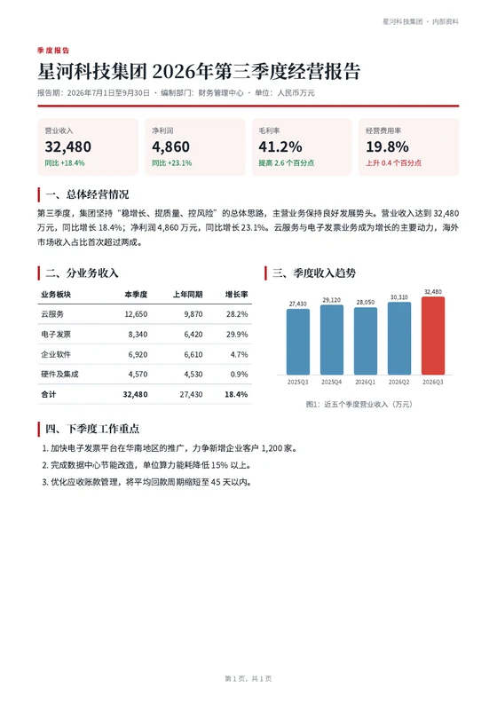
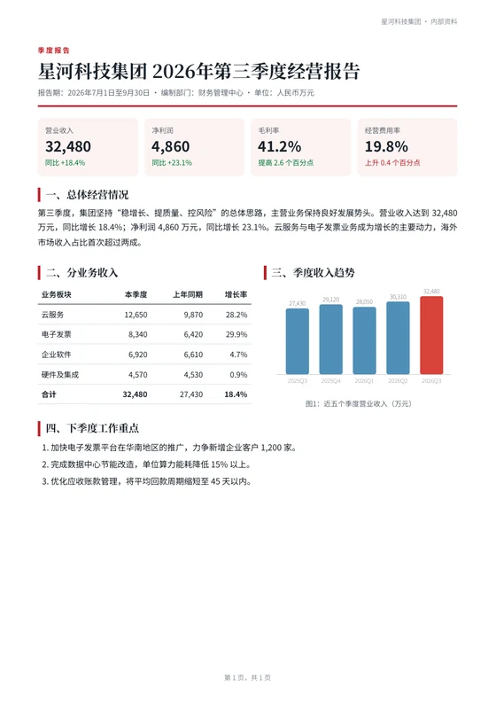
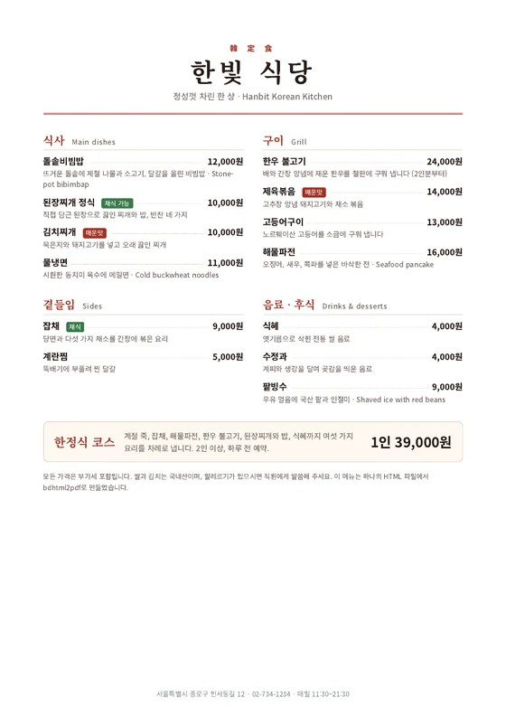
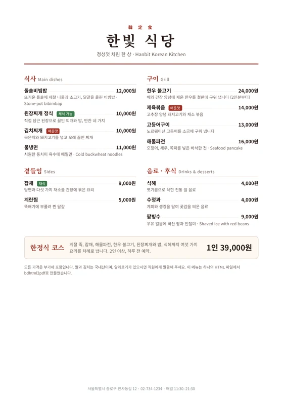
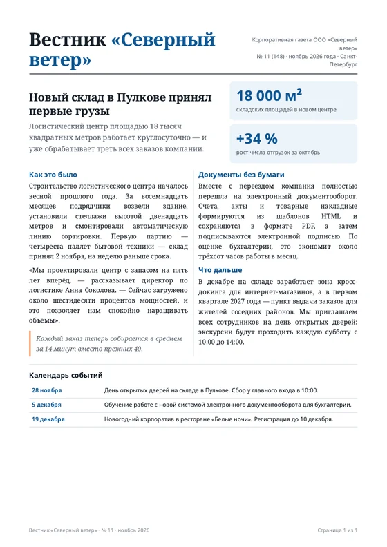
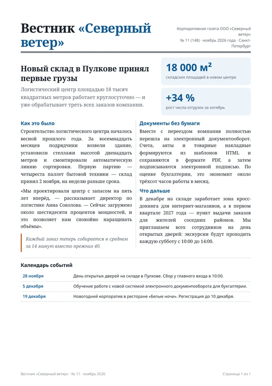
Install
Prebuilt binaries for Linux (x86_64 and aarch64, glibc 2.35 or newer: Ubuntu 22.04, Debian 12, RHEL 10 and later), macOS on Apple silicon and Windows x86_64 are on the Releases page. Each archive holds a single executable, with a .sha256 file beside it.
Linux, with linux-aarch64 on ARM. On macOS use macos-aarch64 and shasum -a 256 -c; the binary is not signed, so a copy downloaded with a browser needs xattr -d com.apple.quarantine bdhtml2pdf once.
VERSION=1.0.0
PLATFORM=linux-x86_64
NAME=bdhtml2pdf-$VERSION-$PLATFORM
URL=https://github.com/bahadirdogru/bdhtml2pdf/releases/download/v$VERSION
curl -LO $URL/$NAME.tar.gz
curl -LO $URL/$NAME.tar.gz.sha256
sha256sum -c $NAME.tar.gz.sha256
tar xzf $NAME.tar.gz
sudo install $NAME/bdhtml2pdf /usr/local/bin/Windows, in PowerShell:
$Version = "1.0.0"
$Name = "bdhtml2pdf-$Version-windows-x86_64"
Invoke-WebRequest "https://github.com/bahadirdogru/bdhtml2pdf/releases/download/v$Version/$Name.zip" -OutFile "$Name.zip"
(Get-FileHash "$Name.zip" -Algorithm SHA256).Hash # compare with $Name.zip.sha256
Expand-Archive "$Name.zip" -DestinationPath .bdhtml2pdf uses fontconfig, which desktop and most server installs already have. In a slim container, install it with some fonts. Liberation keeps the line breaks of pages written for Arial, Times New Roman and Courier New.
apt-get install -y libfontconfig1 fonts-dejavu-core fonts-liberation # Debian, Ubuntu
dnf install -y fontconfig dejavu-sans-fonts liberation-fonts # Fedora, RHELThe options follow wkhtmltopdf. The output extension picks the format: .pdf, .png, .jpg, or .html for the DOM after JavaScript ran.
bdhtml2pdf --page-size A4 --orientation Landscape \
--margin-top 15mm report.html report.pdf
# wait until the page sets window.status = "ready"
bdhtml2pdf --window-status ready --javascript-delay 2000 \
dashboard.html dashboard.pdf
# a 1280 px wide image of the whole page, at twice the pixels
bdhtml2pdf --width 1280 --zoom 2 page.html page.pngComing from wkhtmltopdf? It prints everything at 80% by default; --enable-smart-shrinking gives templates tuned to it the same sizes and page breaks.
To build from source instead: Rust 1.92 or newer and the fontconfig development files (fontconfig-devel, libfontconfig1-dev), then git clone https://github.com/bahadirdogru/bdhtml2pdf && cd bdhtml2pdf && scripts/upstream.sh fetch && cargo build --release. Until the upstream pull requests are merged, upstream.sh checks out the patched fulgur and Blitz next to it. Building
Status
Found by our own test suites. Details and plans are in the roadmap.
Intl in JavaScript; Turkish case mapping in CSS works::first-letter and page CSS inside inline SVG